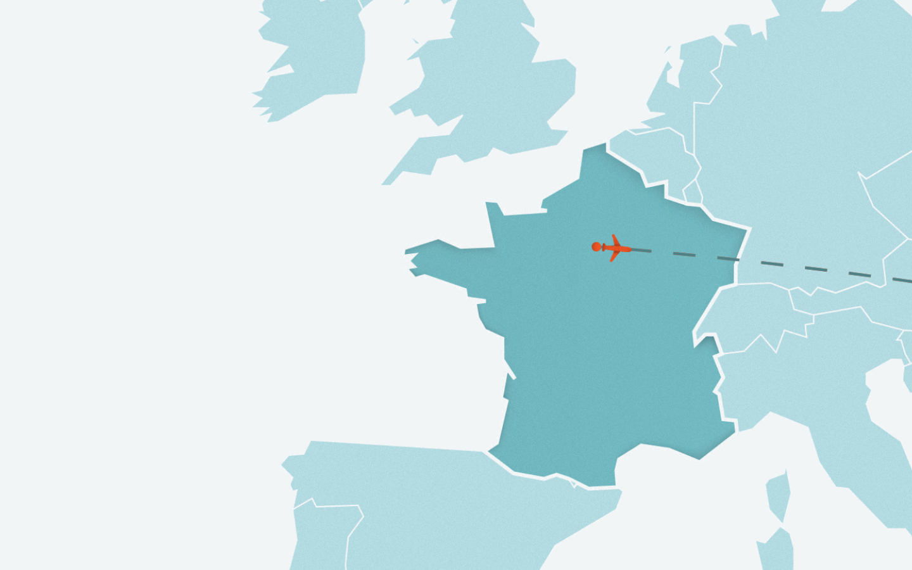

CARTE EN CONSTRUCTION



« De nombreuses agences indiennes présentent ce trek comme étant l’aventure à vivre absolument. Résultat : plusieurs morts l’an dernier ! »
« Je ressens une très forte émotion en reconnaissant le visage et le sourire de Tashi. »
« Après les quelques jours d’acclimatation obligatoire à Leh, nous voilà sur la Chadar. »

« Tashi en voulant me retenir a subi le même sort. »
« Parfois aucun passage n’est possible à moins d’escalader les pentes à pic et glissantes de la montagne. »
« L’environnement est différent de ce que j’ai connu il y a 25 ans. »
« Lundup, le fils de Tashi, nous a préparé une expédition avec nuits sous tente et cuisinier. »
« Il nous accompagnait l’été 1990 pour sortir du Zanskar, par les cols. »
« C’est là que s’arrête notre périple sur glace. »